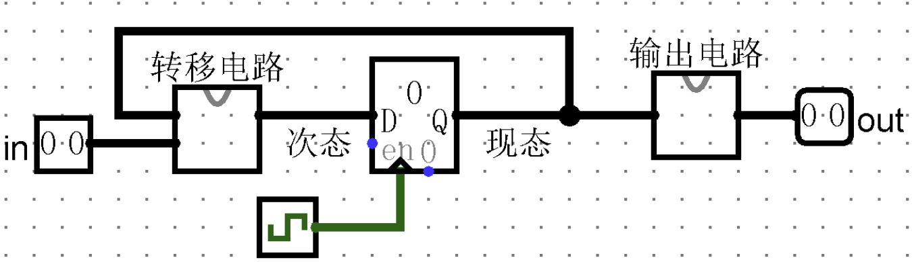
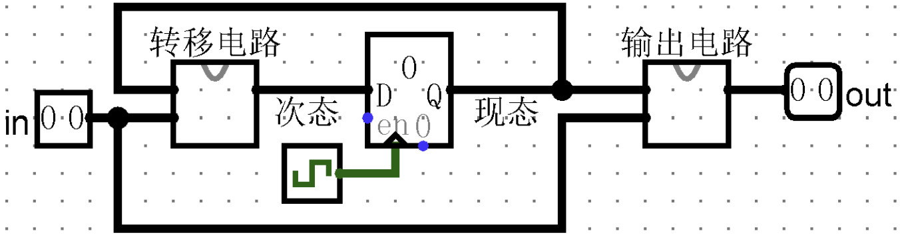

前言
关于FSM
关于状态转移逻辑
关于输出内容
输出关于时间的区别
Logisim实现有限状态机 搭建Moore型状态机

Moore型状态机电路
对于其中的转移电路与输出电路，偷懒的话我们只需用Logisim中的Analyze Circuit或者Combinational Analysis功能即可，如下图
转移电路
输出电路
搭建Mealy型状态机

Mealy型状态机电路
Verilog实现有限状态机 步骤说明
1 2 3 4 5 6 7 8 9 10 11 12 13 model example( input clk, input in, output out ); reg [2 :0 ] state, next_state;parameter A = 0 , B = 1 , C = 2 ; assign out = state == A; assign out = (state == A) && in; endmodule
这样编码的好处是简洁方便，代码更加容易理解。除了上述编码，我们还可以使用独热码进行表示，独热码表示的好处是校验处于某种状态或者转移到某种状态时只需要考虑某一位即可：
1 2 3 4 5 6 7 8 9 10 11 12 13 14 15 16 17 model example( input clk, input in, input [3 :0 ] state, output [3 :0 ] next_state, output out ); parameter A = 0 , B = 1 , C = 2 , D = 3 ; next_state[A] = (state[A] & ~in) | (state[B] & in); assign out = state[D]; assign out = state[D] & in; endmodule
状态机的写法 （虽然看起来比较简短）。常用的写法是后两者，即将组合逻辑与时序逻辑分开的写法。代码中的always块可以有很多个，要根据需求确定。下面给出三段式写法的例子(Moore型状态机，异步复位)：1 2 3 4 5 6 7 8 9 10 11 12 13 14 15 16 17 18 19 20 21 22 23 24 25 26 27 28 29 30 31 32 33 34 35 36 37 38 39 40 41 42 43 44 45 46 model example( input clk, input in1, input in2, input areset, output out1, output out2 ); parameter A = 0 , B = 1 , C = 2 , D = 3 ; reg [1 :0 ] state, next_state;always @(*) begin case (state) A: next_state = in1 ? in2 ? B : C : D; endcase end always @(posedge clk, posedge areset) begin if (areset) state <= 0 ; else state <= next_state; end always @(posedge clk, posedge areset) begin if (areset) {out1, out2} = 2'b0 ; else begin case (state) A: {out1, out2} = 2'b10 ; endcase end end endmodule
两种状态机的区别
Moore型状态机 1 2 3 4 5 6 7 8 9 10 11 12 13 14 15 16 17 18 19 20 21 22 23 24 25 26 27 28 29 30 31 32 33 34 35 36 37 38 39 40 41 42 43 44 45 46 47 module MooreStateMachine( input clk, input areset, input x, output reg y ); reg [1 :0 ] current_state, next_state;initial current_state = S0;always @(posedge clk or posedge areset) begin if (areset) begin current_state <= S0; end else begin current_state <= next_state; end end always @(posedge clk or posedge areset) begin if (areset) begin next_state <= S0; end else begin case (current_state) S0: next_state <= (x == 1'b1 ) ? S1 : S0; S1: next_state <= (x == 1'b0 ) ? S2 : S0; S2: next_state <= (x == 1'b1 ) ? S3 : S0; S3: next_state <= S0; default : next_state <= S0; endcase end end always @(current_state) begin case (current_state) S0: y = 1'b0 ; S1: y = 1'b0 ; S2: y = 1'b1 ; S3: y = 1'b0 ; default : y = 1'b0 ; endcase end endmodule
Mealy型状态机 1 2 3 4 5 6 7 8 9 10 11 12 13 14 15 16 17 18 19 20 21 22 23 24 25 26 27 28 29 30 31 32 33 34 35 36 37 38 39 40 41 42 43 44 45 module MealyStateMachine( input clk, input areset, input x, output reg y ); reg [1 :0 ] current_state, next_state;initial current_state = S0;always @(posedge clk or posedge areset) begin if (areset) begin current_state <= S0; end else begin current_state <= next_state; end end always @(posedge clk or posedge areset) begin if (areset) begin next_state <= S0; end else begin case (current_state) S0: next_state <= (x == 1'b1 ) ? S1 : S0; S1: next_state <= (x == 1'b0 ) ? S2 : S0; S2: next_state <= (x == 1'b1 ) ? S2 : S0; default : next_state <= S0; endcase end end always @(current_state or x) begin case (current_state) S0: y = (x == 1'b1 ) ? 1'b0 : 1'b0 ; S1: y = (x == 1'b0 ) ? 1'b0 : 1'b0 ; S2: y = (x == 1'b1 ) ? 1'b1 : 1'b0 ; default : y = 1'b0 ; endcase end endmodule
MIPS汇编实现有限状态机 1 2 3 4 5 6 7 8 9 10 11 12 13 14 15 16 17 18 19 20 21 22 23 24 25 26 27 28 29 30 31 32 33 34 35 36 37 38 .data state: .word 0 input: .word 0 .text main: lw $t0 , input lw $t1 , state beq $t1 , $zero , state0 beq $t1 , $t0 , state1 state0: li $t1 , 0 j done state1: li $t1 , 1 j done done: sw $t1 , state li $v0 , 10 syscall
同步复位与异步复位
Logisim实现同步/异步复位
异步复位
而同步复位需要考虑时钟信号，所以需要将复位信号与时钟信号结合以对寄存器进行复位，最简单的方法是多路选择器（Mutiplexer）的运用。
同步复位
除了上述方法，我们还可以将复位信号与寄存器的输入信号与与门（AND Gate）相连，再接到寄存器输入端口，其原理与多路选择器相似。
与门同步复位
Verilog实现同步/异步复位
1 2 3 4 5 6 7 8 9 10 11 12 13 14 15 16 17 module SynchronousReset( input clk, input reset, input in, output out ); always @(posedge clk) begin if (reset) else end endmodule
而异步复位电路的时序逻辑模块敏感列表需要加上复位信号的上升/下降沿：
1 2 3 4 5 6 7 8 9 10 11 12 13 14 15 16 17 module AsynchronousReset( input clk, input reset, input in, output out ); always @(posedge clk) begin if (reset) else end endmodule
总结